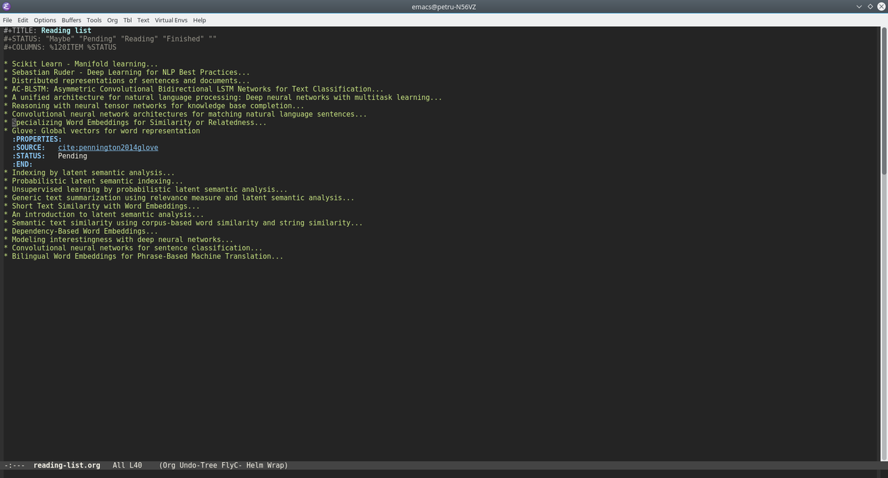

Managing bibliography using Emacs Org-Mode and Org-Ref
| Petru Rebeja
Since I've started to use Emacs more and more I started wondering whether I can use org-mode to keep a reading list/bibliography?
A quick search led me to this blog post where the author was presenting his setup for the same thing. However, after reading into the post I saw that the author uses a combination of tasks and a reading list which requires custom code to be executed and is too complex for my needs.
All I want is a simple list that:
- should be available on multiple workstations
- can be built/managed with out-of-the-shelf components and without much effort
- should allow me to change the status of an entry.
I did however liked the idea of using references to the papers being read and since I recently saw a YouTube video presenting org-ref I thought I should give it a try.
To handle the availability part I decided to use Dropbox which is also suggested by org-ref.
Setup org-ref
org-ref is available on Melpa so to install it just type M-x package-install org-ref. Afterwards copy the code below to your init file and adjust the paths:
(setq reftex-default-bibliography '("~/Dropbox/bibliography/references.bib"))
;; see org-ref for use of these variables
(setq org-ref-bibliography-notes "~/Dropbox/bibliography/notes.org"
org-ref-default-bibliography '("~/Dropbox/bibliography/references.bib")
org-ref-pdf-directory "~/Dropbox/bibliography/bibtex-pdfs/")
(setq bibtex-completion-bibliography "~/Dropbox/bibliography/references.bib"
bibtex-completion-library-path "~/Dropbox/bibliography/bibtex-pdfs"
bibtex-completion-notes-path "~/Dropbox/bibliography/helm-bibtex-notes")
Creating the reading list
With org-ref in place, it was time to setup the reading list so I created a new file named reading-list.org under ~/Dropbox/bibliography/ with the following header:
#+TITLE: Reading list
#+STATUS: "Maybe" "Pending" "Reading" "Finished" ""
#+COLUMNS: %120ITEM %STATUS
The first line obviously defines the title of the document. The second line defines the values for status where:
-
Maybemeans that reading the entry is optional -
Pending- the entry will be read sometime after finishing the item that I'm currently reading -
Reading- the item currently being read -
Finished- the entries that are already read.
Adding an entry to the list
-
Add
bibtexentry inreferences.bibfile. E.g.:@inproceedings{le2014distributed, title={Distributed representations of sentences and documents}, author={Le, Quoc and Mikolov, Tomas}, booktitle={Proceedings of the 31st International Conference on Machine Learning (ICML-14)}, pages={1188--1196}, year={2014} }
- In the
reading-list.orgfile add the title to the list usingM-return - Add
StatusandSourceproperties- With the cursor on the header:
- Press
C-c C-x p - Select or write
Status - Press return
- Select the value for status (e. g.
Pending) - Press return
- Press
- With the cursor on the header:
- Press
C-c C-x p - Write or select
Source - Press return
- If you know the citation key (le2014distributed in the example above) then you can write directly
cite:le2014distributed; otherwise, leave the value forSourceempty and put the cursor after the property declaration. Then, pressC-c ]and select the entry from the reference list.
- Press
- With the cursor on the header:
Repeat the steps above and you should end up with a list like this: 
Change the status of an entry
To change the status of an entry:
- Navigate to the desired entry
- Repeat the steps above for setting the
Statusproperty and select the proper value forStatus
Status overview
After creating the list you may want to have an overview of the status for each entry. This can be achieved using Org Column View.
The setup for column view is in the third line of the header
#+COLUMNS: %120ITEM %STATUS
which tells org-mode how to display the entries. Namely, we're defining two columns:
- Item which will display the heading on 120 characters and
- Status which will take as much space as needed to display the status
Switching to column view
To switch to column view, place the cursor outside the headings and press C-c C-x C-c (or M-x org-columns). The list should look like the image below:
 If your cursor was on a heading when pressing
If your cursor was on a heading when pressing C-c C-x C-c (invoking org-columns) then the column view will be activated only for the selected heading.
Exiting column view
To exit column view position the cursor on a heading that is currently in column view and press q.
That's it. Happy reading!
Comments
Comments powered by Disqus